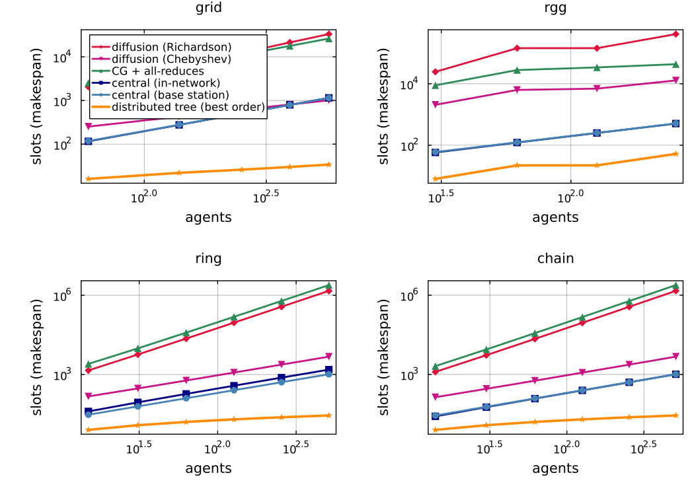
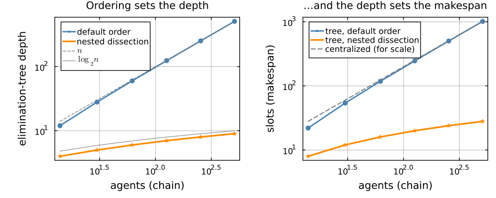
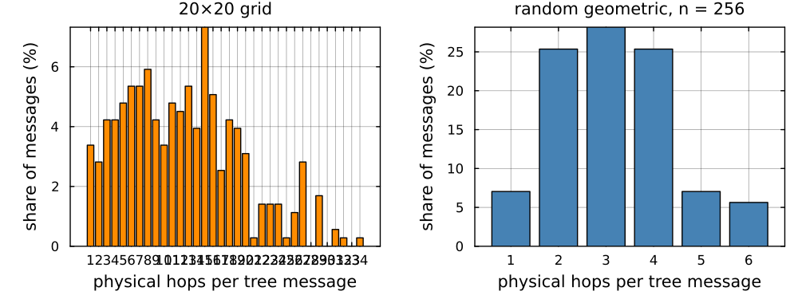
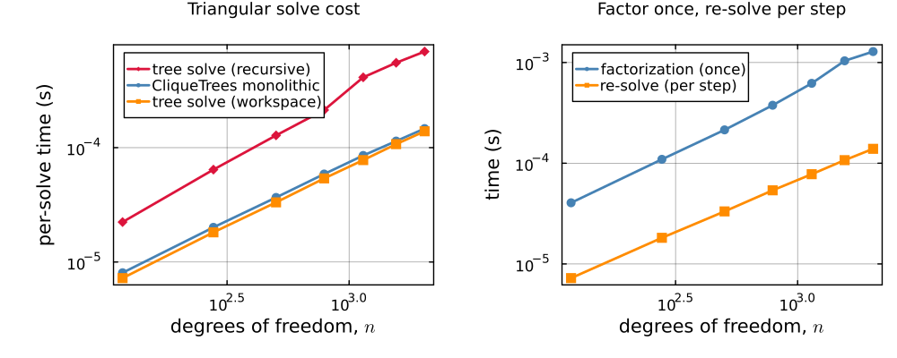
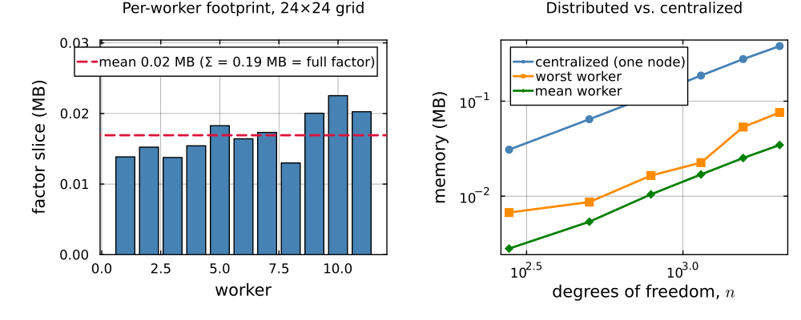

Benchmarks
Two scripts produce everything on this page, and every table regenerates verbatim:
julia --project=docs docs/scripts/distributed_solve_benchmarks.jl # solve cost, memory
julia --project=docs docs/scripts/distributed_solve_comparison.jl # makespans, ordering, hops, wall clockAll measurements are on real harmonic-extension systems: sheaf Laplacians (stalk dimension 2, identity restriction maps) over each formation, targets pinned, $H$ the free–free Dirichlet block. Slot counts and memory are exact and machine-independent. Timings are minimum-of-runs on one machine.
Exactness
The workspace and distributed solves reproduce the monolithic CliqueTrees.Multifrontal answer to machine precision on every topology and size tested (max relative residual $\sim 2\times10^{-16}$), and the real four-process run below agrees to $9.5\times10^{-17}$. Nothing on this page trades accuracy for anything.
Communication makespan: the full tables
Slots to complete one solve (or reach $\varepsilon = 10^{-6}$, for the iterative methods), under the model of the comparison page. tree (ND) is the distributed tree under a nested-dissection ordering. The fewest-slots cell in each row is highlighted.
grid
| agents | tree | tree (ND) | central (base) | central (in-net) | Richardson | Chebyshev | CG (+all-reduce) | κ(H) |
|---|---|---|---|---|---|---|---|---|
| 59 | 26 | 16 | 118 | 116 | 2060 | 252 | 2520 | 74.4 |
| 139 | 56 | 22 | 278 | 276 | 5980 | 428 | 5992 | 216.4 |
| 251 | 92 | 26 | 502 | 504 | 12340 | 616 | 11088 | 446.6 |
| 395 | 146 | 30 | 790 | 792 | 21360 | 808 | 17776 | 772.9 |
| 571 | 184 | 34 | 1142 | 1148 | 33196 | 1008 | 26208 | 1201.4 |
chain
| agents | tree | tree (ND) | central (base) | central (in-net) | Richardson | Chebyshev | CG (+all-reduce) | κ(H) |
|---|---|---|---|---|---|---|---|---|
| 14 | 22 | 8 | 28 | 26 | 1252 | 138 | 2070 | 90.5 |
| 30 | 54 | 12 | 60 | 58 | 5372 | 286 | 8866 | 388.8 |
| 62 | 118 | 16 | 124 | 122 | 22216 | 582 | 36666 | 1607.9 |
| 126 | 246 | 20 | 252 | 250 | 90302 | 1174 | 149098 | 6536.2 |
| 254 | 502 | 24 | 508 | 506 | 364080 | 2356 | 600780 | 26353.0 |
| 510 | 1014 | 28 | 1020 | 1018 | 1462064 | 4720 | 2411920 | 105827.7 |
ring
| agents | tree | tree (ND) | central (base) | central (in-net) | Richardson | Chebyshev | CG (+all-reduce) | κ(H) |
|---|---|---|---|---|---|---|---|---|
| 15 | 24 | 8 | 30 | 40 | 1426 | 148 | 2516 | 103.1 |
| 31 | 56 | 12 | 62 | 88 | 5726 | 296 | 9768 | 414.3 |
| 63 | 120 | 16 | 126 | 184 | 22926 | 592 | 38480 | 1659.4 |
| 127 | 248 | 20 | 254 | 376 | 91730 | 1184 | 152736 | 6639.5 |
| 255 | 504 | 24 | 510 | 760 | 366942 | 2366 | 608062 | 26560.1 |
| 511 | 1016 | 28 | 1022 | 1528 | 1467792 | 4730 | 2426490 | 106242.3 |
star
The degenerate case: one hub sits in every separator, so the tree collapses to a single chunk and ties the coordinator, and nothing beats either.
| agents | tree | tree (ND) | central (base) | central (in-net) | Richardson | Chebyshev | CG (+all-reduce) | κ(H) |
|---|---|---|---|---|---|---|---|---|
| 15 | 26 | 26 | 30 | 28 | 24570 | 1624 | 8120 | 254.0 |
| 63 | 122 | 122 | 126 | 124 | 1753422 | 28830 | 144150 | 4094.0 |
| 255 | 506 | 506 | 510 | 508 | 114984022 | 471932 | 2359660 | 65534.0 |
random geometric
No nested-dissection construction is applied here, so the two tree columns coincide and share the win.
| agents | tree | tree (ND) | central (base) | central (in-net) | Richardson | Chebyshev | CG (+all-reduce) | κ(H) |
|---|---|---|---|---|---|---|---|---|
| 30 | 8 | 8 | 60 | 58 | 24541 | 2070 | 8910 | 154.4 |
| 62 | 22 | 22 | 124 | 122 | 144396 | 6300 | 28000 | 580.6 |
| 126 | 22 | 22 | 252 | 250 | 144320 | 6952 | 34128 | 474.8 |
| 254 | 52 | 52 | 508 | 506 | 415428 | 12844 | 43472 | 1156.4 |

Two readings worth pulling out of the tables:
- On every formation with sublinear separators, tree-ND grows like the plots' flattest curve ($O(\log n)$) while both centralized variants grow linearly and the iterative methods grow with $\kappa(H)$.
- $\kappa(H)$ itself grows with formation size (it is over $10^5$ on the 510-agent chain), so diffusion's disadvantage compounds with scale. Its locality is not the bottleneck. Its conditioning bill is.
The ordering study
The elimination ordering sets the tree's depth, and the depth sets the makespan. Nested dissection here is three lines of Julia (recursively eliminate interval/box middles last), with no external graph partitioner:
Smaller of each metric pair highlighted: nested dissection wins depth and slots, the default order wins fill, which is the trade the study is about.
| topology | agents | depth | depth (ND) | slots | slots (ND) | fill | fill (ND) |
|---|---|---|---|---|---|---|---|
| chain | 62 | 60 | 6 | 118 | 16 | 240 | 412 |
| chain | 254 | 252 | 8 | 502 | 24 | 1008 | 1916 |
| chain | 510 | 508 | 9 | 1014 | 28 | 2032 | 3948 |
| ring | 511 | 509 | 10 | 1016 | 28 | 2036 | 3952 |
| grid | 251 | 45 | 10 | 92 | 26 | 6516 | 8076 |
| grid | 571 | 93 | 14 | 184 | 34 | 19816 | 24708 |

The trade is explicit: on the 510-agent chain, nested dissection buys a 36× makespan reduction (1014 → 28 slots) for a 1.9× fill increase (2032 → 3948 stored entries). Depth tracks the $\log_2 n$ guide line almost exactly. For a deployment this is nearly always the right trade, since communication slots are wall-clock and battery, and a doubled factor is kilobytes.
The physical routing overlay
Measured hop distributions for tree messages over the physical radio graph (discussion and caveats on the comparison page):
| formation, ordering | messages | mean hops | 1-hop share | total transmissions |
|---|---|---|---|---|
| 20×20 grid, default order | 355 | 12.3 | 3% | 4368 |
| 20×20 grid, nested dissection | 266 | 9.8 | 18% | 2605 |
| random geometric, $n = 254$ | 71 | 3.1 | 7% | 224 |

Solve cost on one machine

The preallocated TreeWorkspace solve tracks the monolithic CliqueTrees solve within a few percent (the allocating recursive reference is $\approx 5\times$ slower), and the per-step re-solve is roughly an order of magnitude cheaper than the factorization it reuses. Every "per-step" number in this guide is a re-solve against a cached factor. The factorization is paid once per formation and reported separately.
A real multi-process run
| solve | wall time | vs single process | agrees to |
|---|---|---|---|
| single process, workspace | 0.053 ms | 1× | n/a |
4 worker processes, RemoteChannel | 3.078 ms | 58× slower | $9.5\times10^{-17}$ |
Local worker processes share one machine, so this measures serialization and channel protocol overhead and verifies exactness. It is not a radio simulation (the slot tables are the communication model). The number worth keeping is that this is real inter-process message passing, exact to the last bit.
Per-agent memory

The per-worker slices are balanced around their mean and sum exactly to the centralized factor, so there is zero duplication, by the disjoint-residuals argument of the multifrontal page. On a 24×24 grid across twelve workers, the busiest worker holds 12% of the full factor.